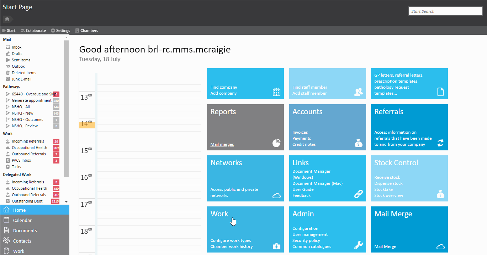
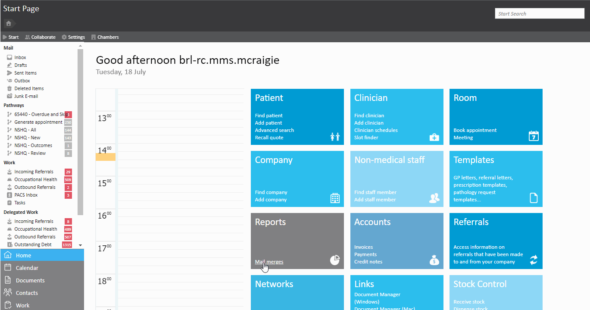
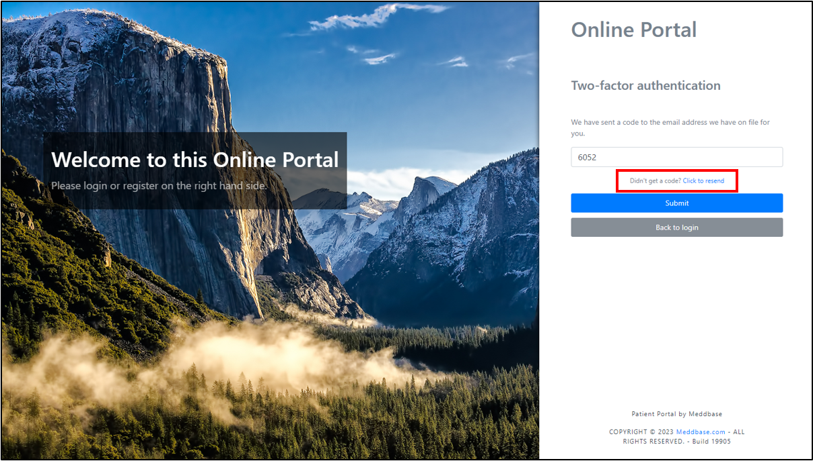
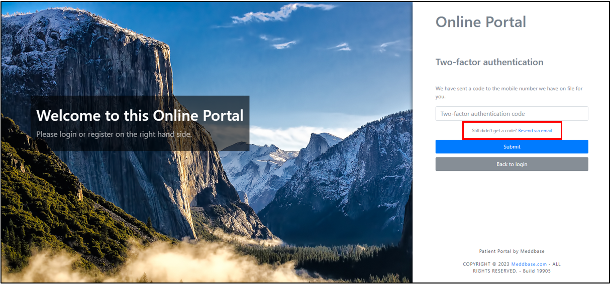

Two factor authentication is an extra layer of security that has been introduced on the Patient portal. It enables patients to log into the portal using their login details and a verification code. Once the login details are entered, patients will be prompted for a validation code which is sent to their mobile device or email address which is registered on their demographic record. This will then allow patients to log into the portal.
The purpose of this article to explain how to enable 2FA on the patient portal and provide troubleshooting methods.
There are two ways that two-factor authentication can be enabled via the chamber.
The first option, is you can enable two-factor authentication chamber wide. This can be achieved by going to Admin > Configuration > Online Portal > Select tick box ‘Require two-factor authentication’.

The second option is you can choose to enable two-factor authentication for individual companies. To do this you will need to navigate to Company > Find Company > Select relevant company > Company details > Patient Portal.
From here you can decide if the company requires two-factor authentication or to use the Chamber as default.

You can disable 2FA by going through the same process. Doing so will disable 2FA for the specific employer.
When patients log into the portal, they will complete the following steps to enable 2FA.
There are a few reasons why a validation code will not work. These include the following:
There can be a few reasons why a patient may not receive a validation code. Its recommended that patients complete the following:


If a patient loses their mobile device or loses access to their email address then it is strongly recommended that the patient contacts the relevant health care service to get their details updated. This will ensure that patients continue to gain access to the portal without further issues.